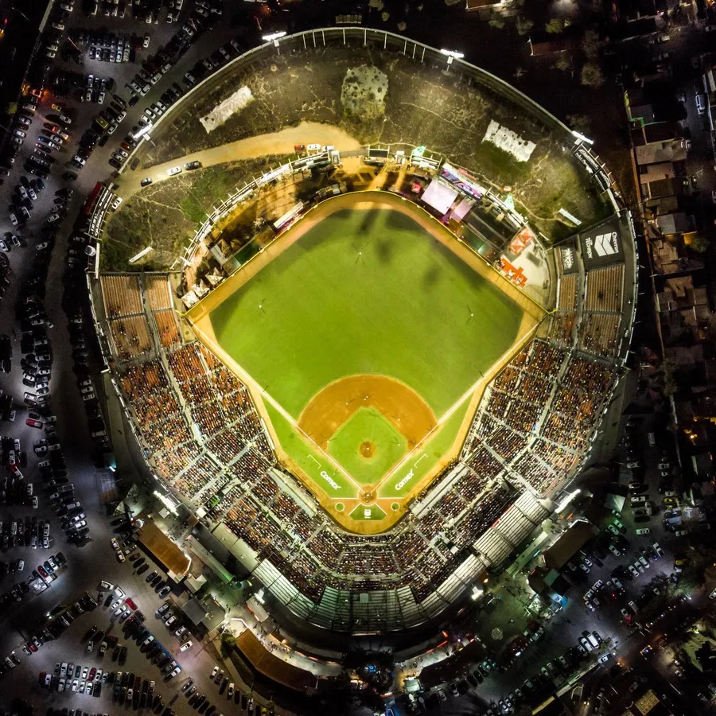
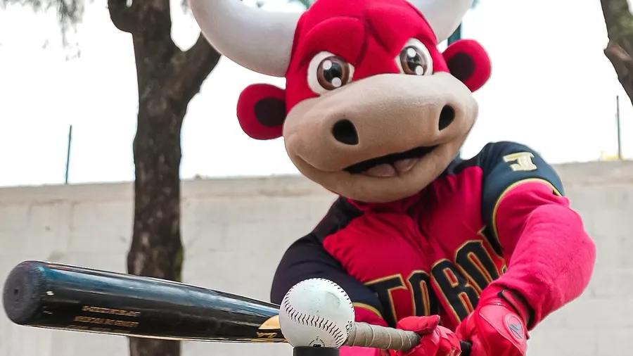

Equipo
Los Toros de Tijuana son los campeones vigentes de la Liga Mexicana de Beisbol: en 2026 ganaron su tercer título. Juegan en la frontera con Estados Unidos y sus colores son el negro, el rojo y el blanco.
Historia
El nombre de Toros llegó a la LMB en 2004, cuando la franquicia de los Tecolotes se mudó a Tijuana. En 2005 otros dueños la renombraron Potros y, después de la temporada 2008, el equipo se fue a Reynosa.
Los Toros de hoy debutaron en la liga en 2014, al comprar la franquicia de los Petroleros de Minatitlán, y desde entonces son de los equipos más fuertes: jugaron la Serie del Rey en 2016, 2017, 2021 y 2026, y ganaron tres de esas cuatro.
Estadio
Su casa es el estadio de Tijuana inaugurado el 12 de octubre de 1977, que hoy se llama Toros Mobil Park (antes Estadio Chevron) y tiene lugar para unos 17 mil aficionados. Ir a un juego es una fiesta: hay música en vivo y cuando un jugador de los Toros batea un jonrón, recibe un sombrero vaquero bordado.

Mascota
Toro Torín es la mascota más conocida, y en el estadio lo acompaña toda una familia de toros: Toro, Torón y Torina. Son un guiño a la tradición taurina de Tijuana.

Figuras del título 2026
- 14
Hernán Pérez. Shortstop venezolano y Jugador Más Valioso de la Serie del Rey: 3 jonrones y 19 carreras producidas en la postemporada.
- 10
Justin Turner. Campeón de Serie Mundial 2020 con los Dodgers; a los 41 años bateó .295 en su primera temporada en Tijuana.
- 18
Adonis Medina. Lanzador abridor: 8-2 en la temporada, 3-0 en los playoffs y abridor del juego del título.
- 63
Brett de Geus. El cerrador del campeón: 23 salvamentos con 1.53 de efectividad.
Temporada 2026
Con el panameño Roberto Kelly como mánager, el mismo que hizo campeones a los Sultanes en 2018, tuvieron el mejor récord del norte. En los playoffs eliminaron a Algodoneros, Charros y Sultanes, y vencieron 4-2 a los Olmecas de Tabasco en la Serie del Rey.